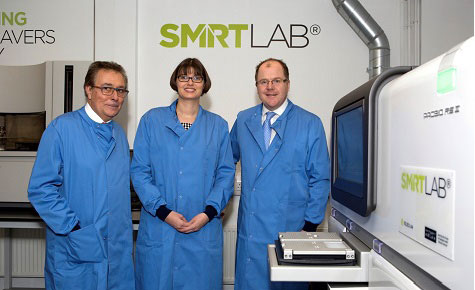

Every day, we match incredible individuals willing to donate their blood stem cells or bone marrow to people with blood cancer and blood disorders who desperately need lifesaving transplants.
It all began in 1974. With her three-year-old son Anthony in urgent need of a bone marrow transplant, Shirley Nolan set up the world’s first register to match donors with people in desperate need.
Now, we help three people each day find that lifesaving match.

It all starts with someone being ready and waiting to help. And thanks to the generosity of our donors, the new mums, the great minds in our labs, and the selflessness of our supporters, it can end with someone’s life being saved.
720,000
People on our UK register
|
2,000
People in the UK who need a match each year
|
68,658
Potential donors recruited last year
|
We conduct world-class research into stem cell matching and transplants, so we can make sure every person in need gets the best possible treatment.

Third-generation sequencing
We have recently launched our new third-generation sequencing (TGS) in our SMARTLAB® – a revolution in lifesaving technology.
|
Services for transplant centres
We can help you find blood stem cell and bone marrow donors, with our register of over 600,000 donors.
|